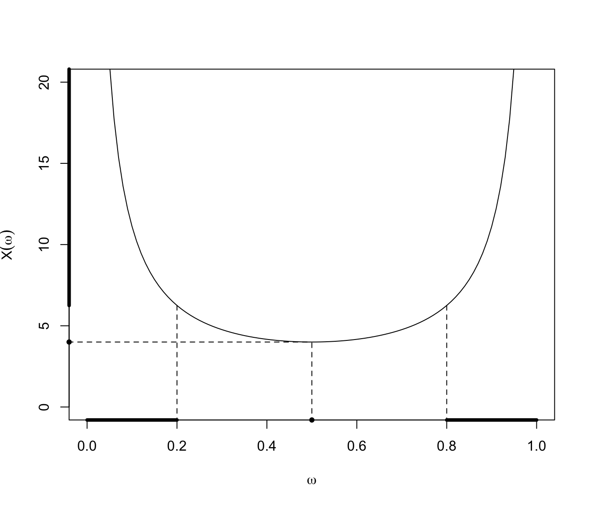
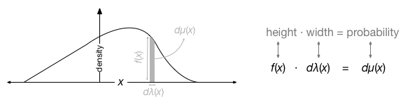

Warning: package 'DescTools' was built under R version 4.4.14 Random Variables
4.1 Random Variables
Definition 4.1 (잴 수 있는 함수 (가측함수))
- 확률공간: \((\Omega, \mathcal{F}, P)\), \(f: \Omega \rightarrow \mathbb{R}\) \[ B \in \mathcal{B}(\mathbb{R}) \Longrightarrow f^{-1}(B) \in \mathcal{F} \] 이면 함수 \(f\)를 잴 수 있는 함수(measurable function)라 부름
Example 4.1 (잴 수 없는 함수의 예)
표본공간 \(\Omega =\{1,2,3\}\), 사건공간 \(\mathcal{F} =\{ \Omega, \emptyset, \{1,2\},\{3\} \}\)
이때 \(f(1)=1, f(2)=2, f(3)=3\)인 함수 \(f: (\Omega,\mathcal{F}) \rightarrow (\mathbb{R}, \mathcal{B}(\mathbb{R}))\)인 함수
그런데 \(\{1\} \in \mathcal{B}(\mathbb{R})\)이지만 \(f^{-1}(\{1\}) = \{1\}\notin \mathcal{F}\)이므로 \(f\)는 가측이 아니며, 따라서 확률변수가 아님
Remark
- 확률변수는 확률공간 위에서 잴 수 있는 함수임
Definition 4.2 (Random Variables) Given a probability triple \((\Omega, \mathcal{F}, P)\), a random variable is a function \(X\) from \(\Omega\) to \(\mathbb{R}\), such that \[ \{ \omega \in \Omega; X(\omega) \leq x \} \in \mathcal{F} ,\quad{} x \in \mathbb{R}. \]
Q. Random variable을 정의하는데 왜 inverse image를 쓰는가?
Commonly a probability measure \(P\) is added to \((\Omega, \mathcal{F})\). Then sets like \(\{X \in A\}:= \{\omega \in \Omega | X(\omega) \in A\}\) can \(=X^{-1}(A)\) be measured if they belong to \(\mathcal{F}\). 예를 들면 \(X: \Omega \rightarrow \mathbb{R}\)이 확률변수일 때 \(X<1\)일 확률을 구하려면 \(X^{-1}(-\infty, 1)\)이 가측이어야 할 것이다.
Example 4.2 (확률변수의 inverse image) Proschan (2016) 예제 4.2이다.
\((\Omega, \mathcal{F}, P) = ((0,1),\mathbb{B}_{(0,1)}, \mu_L)\)에서의 확률변수 \[ X(\omega) = \frac{1}{\omega (1-\omega)} \] 를 생각하자.
Borel set \(B\)를 \(\{ (6.25, \infty) \cup \{4\}\}\)
역상: \(X^{-1}(B) = \{ (0,0.2) \cup (0.8,1) \cup \{0.5\} \} \in \mathcal{B}_{(0,1)}\)

4.2 Radon-nikodym derivative

확률측도는 volume element의 일반화라고 볼 수 있다.
\(\mu(x)\): probability measure, interval이나 set of points들을 인풋으로 받고 area/volume에 해당하는 확률(양수)을 아웃풋으로 주는 함수다.
\(\lambda (x)\): reference measure. We often take \(\lambda (x)\) as the Lebesgue measure which is essentially just a uniform function over the sample space.
The reference measure \(\lambda (x)\) is essentially just a meter-stick that allows us to express the probability measure as a simple function \(f(x)\). That is, we represent the probability measure \(\mu(x)\) as \(f(x)\) by comparing the probability measure to some specified reference measure \(\lambda (x)\). This is essentially the intuition that is given by the Radon-Nikodym derivative \[ f(x) = \frac{d\mu (x)}{d\lambda (x)} \] or equivalently \[ \text{height = area / width.} \] Note that we can also represent the same idea by \[ \mu (A) = \int_{A\in X} f(x) d\lambda (x), \] where \(\mu(A)\) is the sum of the probability of events in the set \(A\) which is itself a subset of the entire sample space \(X\). Note that when \(A=X\) then the integral must equal \(1\) by definition of probability.
라돈-니코딤 정리는 조건부 확률에 응용된다고 함.
Definition 4.3 (Integrable Random Variable) Gut (2014) 의 53쪽에 따르면, \(E|X|<\infty\)인 경우 random variable \(X\)가 integrable 하다고 부른다.
Example 4.3 Given a probability measure \(P\) and sample space \(\Omega\), it is true that \[ \int_{\Omega} dP = 1. \] Because \[ \int_{\Omega} dP = P(\Omega) = 1. \] More generally \[ \int_A dP = \int_{\Omega} 1_A dP = P(A), \quad{} A \in \mathcal{F}. \]
Definition 4.4 (\(\mathcal{L}^p\)) 다음과 같은 확률공간 \((\Omega, \mathcal{F}, P)\)를 생각하자. \(p>1\)에 대해, 확률변수 \(X\)가 \(E|X|^p < \infty\)이면 \(X\in \mathcal{L}^p\)라고 하며 다음과 같은 놈 \(\|X_p\| = (E|X|^p)^{\frac{1}{p}}\)를 정의할 수 있다.
4.3 Distribution
확률변수의 정의는 임의의 measurable subset of possible outcomes (points, bounded/unbounded intervals 등)에 measure (확률)를 부여할 수 있어야 함
Semi-infinite interval \((-\infty, x]\) 또한 이러한 measurable subset이므로 \(\mathbb{R}\)에서 정의된 모든 확률변수는 CDF를 갖음
PDF는 CDF의 도함수 개념이므로 CDF가 미분가능해야 전역적으로 PDF도 존재
4.4 Expectation
- Expectation: integral with respect to the probability measure
Definition 4.5 (Expectation)
\((\Omega, \mathcal{A}, \mathbb{P})\): Probability space
- \(\Omega\): set (sample space)
- \(\mathcal{A}\): \(\sigma\)-algebra on \(\Omega\)
- \(\mathbb{P}\): Probability measure
\(X: \Omega \rightarrow \mathbb{R}\): Random variable (a measurable fct)
Expectation: The concept of integral of \(X\) w.r.t. \(\mathbb{P}\) \[ E[X] \stackrel{\Delta}{=}\int_{\Omega} X(\omega) d\mathbb{P}[\omega] \]
Remark
- 다음의 notation들은 모두 \(X\)의 기댓값을 의미
- \(\int_{\Omega} X(\omega) d\mathbb{P}[\omega]\)
- \(\int_{\Omega} X d\mathbb{P}\) (적분하려는 변수가 분명한 경우 생략)
- \(\int_{\Omega} X(\omega) \mathbb{P}[d\omega]\)
4.5 Cantor Random Variable
Cantor distribution: 누적분포함수가 Cantor function인 probability distribution
Cantor distribution은 PDF나 PMF가 존재하지 않음
동전던지기를 할 때, \(n\)번째 던지기에서 앞면이 나왔을 때 \(\frac{2}{3^n}\)을 갖는 실험을 하면, 최종적으로 \(X\) 달러를 받는다고 할 때, \(X\)는 확률변수이며 Cantor distribution의 예가 됨
특별히 \(\{\xi_n\}\)을 i.i.d. Bernoulli라 할 때 칸토르 확률변수 \(X\)를 \(X=\sum_{n=1}^{\infty}\frac{2}{3^n}\xi_n\)과 같이 놓을 수 있음 (위의 예제 참고)
- 칸토를 집합을 \(C\)라 하고, \(X\in C\)라 할 때, 칸트로 집합이 Lebesgue measure 0 임을 알고 있으며, \(P(X\in C)=1>0\)이므로 \(X\)는 not absolutely continuous with respect to the Lebesgue measure임
Example 4.4 (Cantor distribution의 적률 계산)
PDF나 PMF가 존재하지 않더라도 Cantor distribution 같이 음이 아닌 확률변수에서는 \(F(x) = P(X>x)\)를 계산할 수 있고, 이를 이용해 \[ \begin{align*} E(X) &= \int_0^{\infty} F(x) dx\\ \text{Var} (X) &= \int_0^{\infty} 2x F(x) dx - \Big( \int_0^{\infty}F(x) dx \Big)^2 \end{align*} \] 와 같이 기댓값과 분산을 구할 수 있음
특별히 \(\{\xi_n\}\)을 i.i.d. Bernoulli라 할 때 칸토르 확률변수 \(X\)를 \(X=\sum_{n=1}^{\infty}\frac{2}{3^n}\xi_n\)과 같이 놓을 수 있고 (앞선 동전던지기 참고) \(E(\xi_n)=\frac{1}{2}\), \(\text{Var}(\xi_n) = \frac{1}{4}\)라는 점을 이용해 다음과 같이 구할 수 있음 \[ \begin{align*} E(X) &= \sum_{n=1}^{\infty} E\Big( \frac{2}{3^n} \xi_n \Big)= \sum_{n=1}^{\infty} \frac{2}{3^n} E(\xi_n)\\&= \sum_{n=1}^{\infty} \frac{2}{3^n }\cdot \frac{1}{2}= \sum_{n=1}^{\infty} \frac{1}{3^n} = \frac{1}{2}\\ \text{Var}(X) &= \sum_{n=1}^{\infty} \text{Var}\Big( \frac{2}{3^n} \xi_n \Big)= \sum_{n=1}^{\infty} \Big(\frac{2}{3^n}\Big)^2 \text{Var}(\xi_n)\\&= \sum_{n=1}^{\infty} \frac{4}{9^n }\cdot \frac{1}{4}= \sum_{n=1}^{\infty} \frac{1}{9^n} = \frac{1}{8}. \end{align*} \]
Gut, Allan. 2014. Probability: A Graduate Course. 2nd ed. Springer New York.
Proschan, Michael A. 2016. Essentials of Probability Theory for Statisticians. CRC Press.